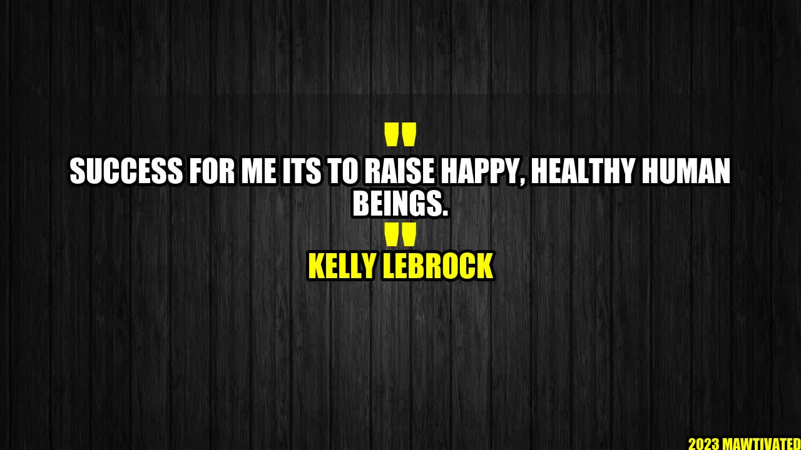

Success - Raising Happy, Healthy Human Beings

Success can be defined in many ways, but for me, it's the ability to raise happy and healthy human beings. I strongly believe that our children are our future, and as parents, it's our responsibility to shape them into responsible, kind, and empathetic individuals who will make the world a better place.
An Inspiring Story
Let me share with you a story that inspired me to become more conscious of my role as a parent:
Author and former actress Kelly LeBrock once said, "It's not what you say to your children, but how you say it. Your children don't remember what you try to teach them. They remember what you are."
This quote struck a chord with me because it made me realize that my actions speak louder than my words. I must set an example for my children to follow, rather than just telling them what to do. This inspired me to become more mindful of my behavior and how it may affect my children.
and Case Studies
I have been a parent for over a decade, and I've learned a lot through personal experience and observation. Here are some of my insights:
- Empathy is key: Children learn empathy by witnessing it in action. By showing empathy towards your child, you will teach them how to be empathetic towards others. I remember when my son was upset because he had lost his favorite toy. Instead of brushing it off, I acknowledged his feelings and suggested we look for it together. This made him feel heard and supported, and he was able to calm down and carry on with his day.
- The power of positive reinforcement: Instead of focusing on mistakes, I try to praise my children for their efforts and accomplishments. This encourages them to continue to try their best and motivates them to learn and grow. When my daughter came home with a good grade on her math test, I made sure to acknowledge her hard work and dedication. This helped boost her self-esteem and gave her the motivation to keep pushing herself.
- Setting clear boundaries: Children thrive when they know what is expected of them. By setting clear boundaries and consequences, you are providing structure and guidance. When my kids were younger, I made sure to establish a bedtime routine and a set of rules for behavior. This helped them feel secure and provided a sense of consistency.
Examples of Success
Let me share with you some examples of what success means to me:
- A child who knows how to express their emotions in a healthy way.
- A child who is kind and empathetic towards others.
- A child who can think critically and solve problems.
- A child who has a strong sense of self-worth and confidence.
- A child who has healthy relationships with family and friends.
Tips for Raising Happy, Healthy Human Beings
Based on my own experience and research, here are some practical tips for raising happy, healthy human beings:
- Lead by example: Be the person you want your child to become.
- Show empathy: Acknowledge your child's feelings and validate them.
- Use positive reinforcement: Praise your child for their efforts and accomplishments.
- Set boundaries: Children thrive when they know what is expected of them.
- Encourage curiosity: Foster a love of learning and exploration.
- Teach resilience: Help your child bounce back from setbacks.
- Be present: Put down your phone and engage with your child.
- Practice self-care: Take care of yourself so you can take care of your child.
Conclusion
In conclusion, success for me is all about raising happy and healthy human beings. It's about guiding them towards becoming responsible, kind, and empathetic individuals who will make a positive impact on the world. By leading by example, showing empathy, using positive reinforcement, and setting clear boundaries, we can help our children become the best version of themselves. As parents, it's our responsibility to shape the future, one child at a time.
To sum up, here are the three key takeaways from this article:
- Show empathy towards your child and teach them how to be empathetic towards others.
- Use positive reinforcement to encourage your child and boost their self-esteem.
- Set clear boundaries and guide your child towards becoming the best version of themselves.
Thank you for reading!
Hashtags and Article Information
Hashtags: #raisinghappykids #parentingtips #healthychildren #success #positiveparenting
SEO Keywords: raising happy kids, parenting tips, healthy children, success, positive parenting
Article Category: Parenting
Curated by Team Akash.Mittal.Blog
Curated by Team Akash.Mittal.Blog
Share on Twitter Share on LinkedIn